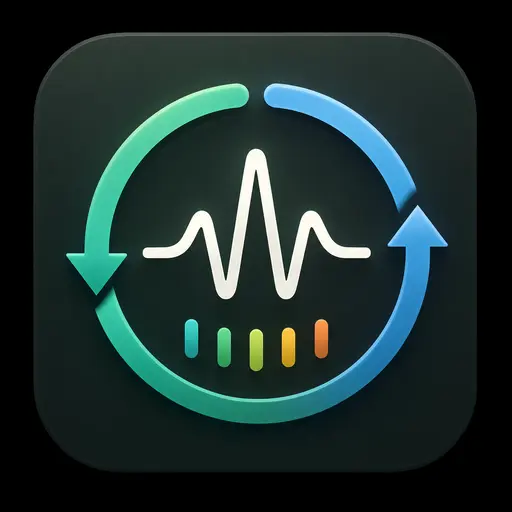

Whether you are troubleshooting a stuttering Zoom conference, diagnosing why a video upload is dragging, or wondering which background process is chewing up your MacBook battery, having instant visibility into your network and system activity is essential.
Rather than keeping Activity Monitor permanently pinned on your dock, macOS allows native lightweight utilities to live right in the menu bar. However, poorly coded menu bar apps can actually cause the very performance drops they are supposed to diagnose.
We tested the top macOS menu bar utilities on Apple Silicon (M1–M4) and Intel Macs, assessing CPU wakeups, battery consumption, design restraint, and data accuracy. Here are the top menu bar utilities in 2026.
Quick Comparison: Mac Menu Bar Monitoring Apps
| Utility | Focus | Price / License | Apple Silicon Native | Best For |
|---|---|---|---|---|
| Mac Network Monitor | Live Network Bandwidth | Free | Yes (Pure Swift) | Glanceable upload/download speeds & clean popover |
| Stats | Full System Metrics | Open Source (MIT) | Yes | Modular CPU, GPU, RAM, Disk & Sensor tracking |
| iStat Menus | Advanced Diagnostics | \$14.99 | Yes | Granular weather, battery cycles & history graphs |
| MenuMeters | Classic Resource Graphs | Open Source | Yes | Old-school minimalist graph sparklines |
| Ice / Hidden Bar | Menu Bar Organization | Open Source | Yes | Hiding icon clutter around the camera notch |
1. Mac Network Monitor — Best for Real-Time Bandwidth Visibility
Most Mac users don't need dozens of complex temperature charts crowding their top bar. What they frequently need is an answer to one simple question: "Is my connection actually moving data right now, and at what speed?"
Mac Network Monitor by ByteGif is designed with laser focus: it provides a featherlight, highly responsive upload and download speed counter directly in your macOS menu bar.

Mac Network Monitor
Mac Network Monitor is built in native Swift for maximum energy efficiency on MacBooks. It tracks network packets directly at the kernel interface level, displaying live transfer rates (e.g. ↑ 2.4 MB/s ↓ 14.8 ../code>) in your menu bar. Clicking the menu reveals a clean popover dashboard showing current Wi-Fi SSID, local IP address, and active interface details.
- Zero battery penalty: ultra-low CPU cycle footprint on Apple Silicon
- Real-time download and upload rate readout with auto-scaling units (KB/s, MB/s)
- Compact popover showing active network interface and connection details
- Supports macOS Dark Mode and responsive menu bar sizing
- Free from ads, analytics, or background tracking services
Because Mac Network Monitor focuses exclusively on network traffic, its memory footprint remains well under 25MB, making it ideal for MacBook Air users who want insight without sacrificing battery life.
2. Stats by Serhiy Mytrovtsiy — Best All-in-One Open-Source Dashboard
If you want an open-source alternative to commercial system monitors, Stats is the undisputed champion. Written in Swift and actively maintained on GitHub, Stats lets you pick and choose which modules appear in your menu bar.
You can enable CPU utilization charts, GPU core frequencies, unified memory pressure, battery health, SSD read/write speeds, and Bluetooth battery levels. Each module offers customizable visual representations—from tiny mini-graphs to numeric percentages.
3. iStat Menus — The Most Comprehensive Commercial Monitor
For power users who demand detailed historical logs and intricate telemetry, Bjango's iStat Menus has been the premium benchmark for over 15 years.
Clicking any sensor in iStat Menus opens a rich multi-tabbed dropdown detailing individual process CPU hogs, per-app network usage, internal thermal fan speeds, and even world clocks with local sunrise/sunset calculations.
4. MenuMeters — Classic Retro Simplicity
Originally developed by Alex Harper and modernized for Apple Silicon by Yuji Tachikawa, MenuMeters is beloved by long-time Mac power users who appreciate its compact sparkline graphs.
It displays tiny line and bar graphs showing CPU load, memory paging, disk I/O blinks, and network packet activity in a fraction of the horizontal width required by modern widget apps.
5. Ice & Hidden Bar — Essential Companions for the MacBook Notch
On modern 14-inch and 16-inch MacBooks with camera notches, menu bar space is limited. When you have several utilities installed, icons on the left side can hide behind the physical notch!
Pair your monitoring tools with an open-source menu bar hider like Ice or Hidden Bar. These utilities let you collapse secondary background icons behind a small toggle arrow, keeping only your crucial live indicators (like Mac Network Monitor) permanently visible.
Summary: How to Build Your Ideal Menu Bar Setup
- For fast, dedicated upload/download speed visibility: Install Mac Network Monitor.
- For a comprehensive, modular open-source dashboard: Install Stats.
- For deep historical hardware diagnostics and fan controls: Choose iStat Menus.
- To keep icons from disappearing behind the camera notch: Install Ice or Hidden Bar.
About ByteGif Software Studio
ByteGif builds privacy-first tools, media players, and native utilities for Android, macOS, Windows, Linux, and the web. Our mission is to build software with zero bloat, intuitive design, and absolute respect for user data.